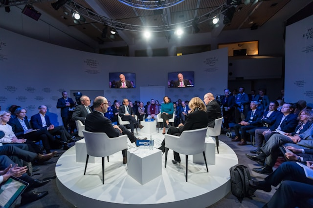
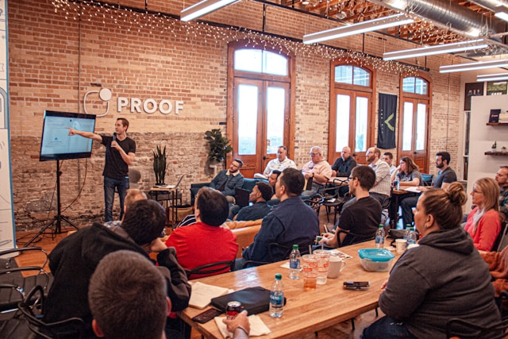
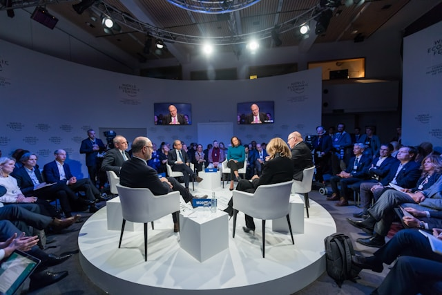
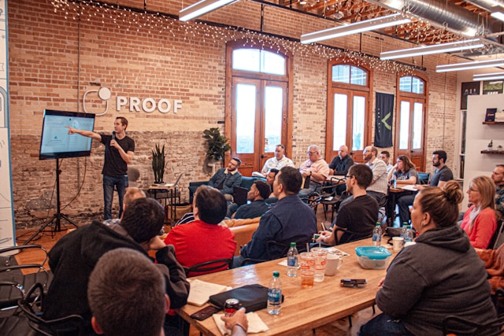

Découvrez nos actions chez GreenPath
Ateliers DIY :
Fabriquez vos produits maison, réduisez vos déchets!
Chez GreenPath, nous croyons que chaque petit geste compte pour préserver
notre planète. Nos ateliers DIY (Do It Yourself) sont conçus pour vous
apprendre à fabriquer vous-même vos produits du quotidien, de manière simple,
économique et écologique. En remplaçant les produits industriels par des
alternatives maison, vous réduisez vos déchets, économisez de l’argent et
prenez soin de votre santé.
*Au programme de nos ateliers :
Fabriquer sa lessive : Découvrez comment réaliser une lessive naturelle, sans produits chimiques agressifs, à base de savon de Marseille et de cristaux de soude.
Créer son dentifrice : Apprenez à préparer un dentifrice sain, à base d’argile blanche et d’huiles essentielles, pour des dents blanches et une haleine fraîche.
Confectionner des bee wraps : Remplacez le film alimentaire par ces emballages réutilisables en cire d’abeille, parfaits pour conserver vos aliments.
Fabriquer des produits ménagers : Nettoyants multi-usage, désodorisants, éponges lavables… Tout pour une maison propre et zéro déchet !
Nos ateliers sont animés par des bénévoles passionnés, qui partagent leurs astuces et répondent à toutes vos questions. Aucun prérequis n’est nécessaire : nous fournissons tout le matériel, et vous repartez avec vos créations !
*Prochain atelier : Samedi 20 décembre 2025 à 10h – Mairie du 15ème (salle polyvalente).
Inscription obligatoire (places limitées). Tarif : 5€ (gratuit pour les adhérents).
Collectes de déchets :
Nettoyons Paris ensemble, un parc à la fois!
Chaque mois, GreenPath organise une collecte de déchets dans un parc différent de Paris. Ces événements rassemblent des bénévoles de tous âges, déterminés à rendre nos espaces verts plus propres et plus agréables pour tous. Équipés de gants, de sacs poubelles et de pinces, nous parcourons les allées, les pelouses et les berges pour ramasser les déchets abandonnés.
*Pourquoi participer ?
Agir concrètement : En 2 heures, nous collectons en moyenne 50 kg de déchets par session. Un impact visible et immédiat !
Rencontrer des gens engagés : Nos collectes sont l’occasion de discuter, d’échanger des idées et de créer du lien autour d’une cause commune.
Découvrir Paris autrement : Nous intervenons dans des parcs emblématiques (Buttes-Chaumont, Parc Monceau, Bois de Vincennes…) et des lieux moins connus.
*Comment ça se passe ?
Nous fournissons tout le matériel nécessaire (gants, sacs, pinces).
Un briefing de 10 minutes est organisé en début de session pour expliquer les consignes de sécurité et les zones à couvrir.
À la fin de la collecte, nous trions les déchets ensemble et partageons un goûter convivial (apportez votre gourde !).
*Prochaine collecte: Dimanche 21 décembre 2025 – Parc des Buttes-Chaumont (rdv à 10h devant la grotte).
Venez nombreux, et n’oubliez pas vos bonnes baskets !
Conférences :
Échangeons et apprenons ensemble pour un avenir durable
GreenPath organise régulièrement des conférences et des débats sur des thèmes liés à l’écologie, la biodiversité et le développement durable. Ces événements sont l’occasion d’en apprendre davantage sur les enjeux environnementaux actuels, de rencontrer des experts et de partager vos idées avec d’autres citoyens engagés.
*Nos conférences abordent des sujets variés :
L’impact du numérique sur l’environnement : Comment réduire l’empreinte carbone de nos outils digitaux ? Quelles sont les alternatives aux géants du web ?
Le zéro déchet au quotidien : Témoignages et conseils pour adopter un mode de vie sans plastique.
La biodiversité en ville : Comment préserver la faune et la flore dans un environnement urbain ?
Les énergies renouvelables : Panneaux solaires, éoliennes… Quelles solutions pour une transition énergétique réussie ?
Nos intervenants sont des experts, des chercheurs ou des militants associatifs, qui partagent leur savoir avec pédagogie. Chaque conférence est suivie d’un temps d’échange avec le public, pour répondre à vos questions et recueillir vos suggestions.
*Prochaine conférence : Samedi 03 janvier 2026 à 14h – ‘L’impact du numérique sur l’environnement’ – Médiathèque du 13ème (salle de conférence).
Entrée libre et gratuite. Réservation conseillée (places assises limitées).
 


